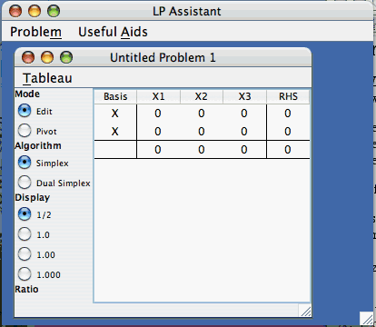
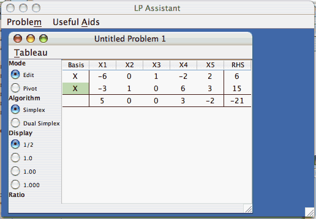
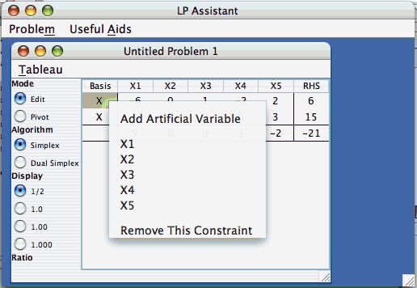
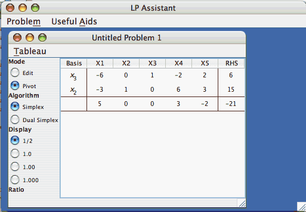
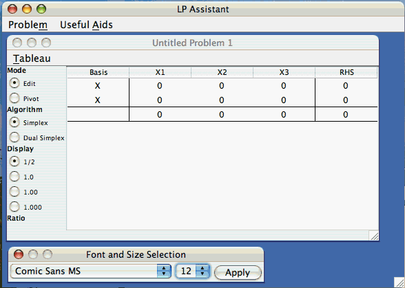

LP Assistant
This file last updated on February 6, 2008
Table of Contents:
LP Assistant is free (but copyrighted) software that enables students in a linear programming course to easily set up a simplex tableau representing a linear programming problem in canonical form, and then to execute a sequence of pivot operations to drive towards a solution. The notation used by LP Assistant is that of An Introduction to Linear Programming and Game Theory, Third Edition, by Paul R. Thie and G. E. Keough, to be published in 2008 by John Wiley and Sons, Inc. The design and implementation of LP Assistant is by G. E. Keough.
When defining a problem and setting up a simplex tableau, LP Assistant allows for the addition (and removal) of both constraints and variables as necessary to fit the problem. While the user is responsible for properly defining slack variables and identifying basic variables, LP Assistant will manage artificial variables and the arithmetic associated with the auxiliary w-function which helps drive the problem into canonical form with original basic variables.
Once the user has completed the construction phase of the simplex tableau for a problem, a computational mode is entered during which the user indicates a pivot term by clicking with the mouse and LP Assistant executes the arithmetic of the pivot operation about that term. Because the proper selection of pivots in the simplex algorithm requires knowledge of certain ratios, LP Assistant displays ratios in real time as the user moves the mouse over a tableau looking for the correct pivot term.
LP Assistant also allows the user to begin a new problem from a current tableau at any time. This feature has two intended uses:
LP Assistant is written entirely in Java and distributed as a single Java Archive file to support its use on multiple platforms. The software has a reasonable amount of sophistication in its implementation, with no fixed bounds on the number of constraints or variables used in a given problem. However, it does not pretend to offer industrial strength capabilities or to be an LP solver (for which there are already many excellent products available, both commercially and in the public domain). Indeed, LP Assistant manages only a user interface and the arithmetic of the pivot operation -- it contains no code to fully implement the simplex algorithm or even to monitor the progress of a user when working out an LP problem.
Further implementation comments appear in the Closing Comments section below.
The source code of LP Assistant is available upon request from G. E. Keough at the address keough@bc.edu.
When LP Assistant opens, a Workspace Window is opened, and a new tableau for a problem having 2 constraints and 3 variables is opened within the Workspace in its own window named "Untitled Problem 1".

Notice that some button groups appear at the left side of the window:
We wish to solve a new linear programming problem, and we will illustrate using the process described at the start of Section 3.5 in the text, based on the following problem of Section 3.3:
Minimize -4x1 + x2 + x3 + 7x4 + 3x5 = z
subject to
-6x1 + x3 - 2x4 + 2x5 = 6
-3x1 + x2 - x3 + 8x4 + x5 = 9
all xi nonnegative.
After expressing the problem in canonical form with x2 and x3 serving as basic variables (note: LP Assistant does not check the form of problems -- the user must present the problem in canonical form), we will minimize z with
-6x1 + x3 - 2x4 + 2x5 = 6
-3x1 + x2 + 6x4 + 3x5 = 15
5x1 + 3x4 - 2x5 = -21 + z
This problem has two constraints and five variables, so first we must enlarge the new tableau (in the window entitled "Untitled Problem 1") to accommodate two extra variables. From the Tableau menu in the "Untitled Problem 1" window, twice select Tableau -> Add Regular Variable (or use the accelerator key combination Command+B).
Now enter the numerical values into the tableau. You do so by clicking in any location in the tableau and typing. You can use the Tab key to move around through the tableau entries, although you cannot type in the first column where the "X" notations are displayed. The completed tableau looks like this.

Next, set the basic variable labels. You do this by clicking on the "X" in the first row and a popup menu will appear as shown below, from which you may choose the variable to be basic for this constraint (here, you should choose X3). Similarly, set the basic variable for the second row to be X2.

After all numeric entries are entered and the two basic variables labeled, click the button marked "Pivot" at the left side of the window. (You'll notice a slight change in the tableau presentation in this mode -- you'll understand why shortly). You are now ready to begin working on the problem.

2.2 Working an LP Problem
The problem window is now defined as shown above, and all that remains now is to execute a sequence of pivots to find a solution to the problem. But with LP Assistant in Pivot mode, this is literally as easy as moving and clicking the mouse.
To execute a pivot, simply click on the pivot term. As shown in Table 3.2 in the text, the proper sequence of pivots for this example begins at the 2x5 term in the first constraint. Clicking at that term, the term is circled, the pivot executed, and the resulting tableau appended to the display. Clicking at the 6x1 term in the second constraint of the resulting tableau executes a second pivot operation, with a third (and final) tableau appended, as shown below. (Notice, by the way, that fractions are properly drawn in this third tableau; this is the reason the graphic presentation changes slightly when moving from Edit mode to Pivot mode.)
Here, we knew the sequence of pivots in advance, but the simplex algorithm directs the user to select a pivot term from a column in which there is a negative objective function coefficient (the bottom row), and further based on minimizing the ratio of basic variable value to constraint coefficient in such a column.
LP Assistant helps you make the proper choice by showing you the appropriate ratio in real time as you move the mouse over a tableau. The numerical ratio appears on the left pane just under the label Ratio. For example, if you position the mouse over the 7/2 entry in the first row of the last tableau, you'll see the ratio displayed as 1.714, which is the ratio 6 to 7/2. (Newer releases of the code now display the full string "b1/a1,4 = 1.714" to more precisely indicate which ratio is being computed.)
Ratios are shown during Pivot Mode only in cells in the last tableau for which a pivot operation would make numerical sense -- i.e., you cannot pivot on a "1" if all other entries above and below in the constraint columns are "0" (a variable is already in the basis), and you cannot pivot on a "0" entry. However, LP Assistant does not prohibit you from selecting a pivot term that does not make logical sense for applying the simplex algorithm -- the user assumes full responsibility for selecting the pivot terms.
How do you know when a solution has (or has not) been found? It's important to understand that LP Assistant makes no indication of what conclusion should be drawn at any time. The user bears the responsibility of interpreting the tableaux generated. In the example in question, the third tableau has all nonnegative coefficients along the bottom row, so the user must recognize that a problem solution has been found and no further pivots need be executed. The minimum value of the function is z = 14 at x1 = 1, x5 = 6, and x2 = x3 = x4 = 0.
While setting up the initial tableau for a problem in LP Assistant, there are other actions that may need to be taken than seen in the example above. These include
We'll address each of these in sequence. Note: Action 1 is (clearly) only available in Edit Mode. Actions 2 through 7 are available only for a problem having one tableau. Once the user enters Pivot Mode and the problem contains more than one tableau, the Add and Remove operations are no longer available.
Navgating and Typing in Edit Mode generally respects most keystroke operations associated with spreadsheets. Click on a cell and strat typing to enter a value. Use the Tab key, Arrow keys, Return key and so forth to move from cell to cell via keyboard direction.
All coefficients entered in a problem must be rational. You can type coefficients in decimal form (e.g., type 2.3 for the fraction 23/10) or as quotients of integers (i.e., just type the five characters "23/10," with the slash character denoting division). As long as you type only digits, the period, the minus sign, and the division sign in a menaingful sequence, LP Assistant will likely correctly parse your input. Whenever an input sequence of characters cannot be correctly parsed, LP Assistant will replace your input with a zero.
Once coefficients are entered, all pivot arithmetic will be done exactly, without numerical roundoff. Thus, always enter exact rational numbers when you know them. For example, enter the coefficient 1/3 simply by typing "1/3" -- entering any of its likely approximations such as "0.3" or "0.33" or "0.333" will only reduce the accuracy of future calculations.
On the other hand, coefficients which cannot be expressed in rational form must be entered using a numerical approximation. However, in virtually every practical application of linear programming, this will not be an issue.
To Add a Constraint to a problem, select Tableau -> Add Constraint (or, use the accelerator key combination Command+= [Command key plus the Equals key], or click in the Basis column of the tableau in the row with the objective function coefficients and select Add Constraint from the popup menu that appears. New constraints are always added as the last constraint.
To Remove a Constraint, either select Tableau -> Remove Constraint -> From Row N, where N is the row in which the constraint appears; or, click in the Basis column and select Remove This Constraint from the popup menu.
To Add a Regular Variable, select Tableau -> Add Regular Variable (or, use the accelerator key combination Command+B). New Variables are always added with the next available (highest) index for regular variables; if there are currently three regular variables in the problem, the new variable will be x4. (If there are artificial variables in the problem, they are renumbered appropriately.)
To Remove a Regular Variable, select Tableau -> Remove Variable -> Variable N, where N is the index of the regular variable to be removed. (All variables in the problem with higher indices will be renumbered appropriately.)
To Add an Artificial Variable, click in the Basis column of the row (constraint) in which the artificial variable is to be added, and select Add Artificial Variable from the popup menu that appears. Artificial variables are always inserted having the highest variable index.
The first time you add an artificial variable to a tableau, you'll see the tableau properly enlarged not only with an extra column, but also with an extra row below the objective function coefficients. This last row contains, of course, the coefficients of the auxiliary w-function that helps drive the system into canonical form having no artificial variables in the basis. All columns associated with artificial variables, as well as the w-row, will be shaded with a light gold to remind the user of the special, auxiliary nature of these entries (and, in particular, that they are not editable).
As long as artificial variables are present in the tableau and the tableau is in Pivot Mode, LP Assistant will automatically maintain the coefficients in the w-row according to the scheme by which the w-row is constructed. (Coefficients in the w-row may not always be updated as changes are made in Edit Mode, but all are validated when entering Pivot Mode.)
To Remove an Artificial Variable, click in the Basis column of the row (constraint) in which the artificial variable is to be removed, and select Remove Artificial Variable from the popup menu that appears. If this is the last artificial variable removed, the auxiliary w-row in the tableau will be removed as well.
To Change from the Simplex Algorithm to the the Dual Simplex Algorithm and vice versa, click the appropriate radio button for Algorithm. The tableau will be relabeled in X or Y format according to the algorithm in use. The change is more than cosmetic -- this setting controls the Display of Ratios.
When using the Simplex Algorithm, the ratio displayed is computed from the constant coefficient and the constraint coefficient, and the ratio will be shown with an appropriate label such as "b1/a1,4 = 1.714". When using the Dual Simplex Algorithm, the ratio displayed is computed from the objective function coefficient and the constraint coefficient, and the label for the ratio will be, say, "c4/a1,4 = 1.714"
Note that if the w-row is present when using the Dual Simplex Algorithm, the ratio is computed using the w-row with an appropriate label, such as "w4/a1,4 = 1.714". (Remember that once the w-row reaches its trivial state, the user can discard the row by opening the current problem in a new problem window.)
To Change the Way Values are Displayed, select one of the Display buttons labeled "1/2," "1.0," "1.00," or "1.000." These show values exactly as fractions, or rounded to one, two, or three decimal places, respectively. Note that these buttons control display only; values are maintained internally at all times in exact format.
To Create a new problem from an existing problem, select Problem -> New from (Name) in the Workspace Window menubar, where (Name) is the name of the currently active problem window. The last tableau of the current problem becomes the first tableau in a new problem window.
Note that if a w-row is present in the last tableau of the current tableau, it is removed (as are all artificial variables) for the tableau in the new window. In theory, if a w-row is present in a problem, its purpose is to drive the problem to a more amenable form in which the artificial variables are no longer necessary. Thus one of the uses of this operation is to move from a current tableau in which the w-function has been driven to zero, to a new tableau in which the problem can now be continued with an identified basis consisting only of the original variables of the problem.
To Continue a worked problem with added constraints, select Problem -> New from (Name) from the menubar in the Workspace Window as described above, where (Name) is the name of the currently active problem window in which you're working. Switching to Edit Mode then allows you to modify the continued problem. This procedure is especially useful for integer programming problems where the Gomory Plane Cutting algorithm or Branch and Bound techniques can be applied.
Should a problem have a w-row when it is continued in a new window, it will be removed if the row has reached its trivial state.
To Undo a Pivot Operation, select Tableau -> Remove Last Tableau. The first tableau can never be removed, of course.
Finally, to Change the Font and Size of characters appearing in a tableau, select Useful Aids -> Font and Size Selection from the Workspace Window menu. A selection window will appear at the lower, left of the Workspace Window as seen in

Choose Font and Size as desired fom the pulldown menus, then click Apply. If there are Problem Windows open, the change will be made to the top-most window. If there are no Problem Windows open, then clicking Apply will set this as the default font and size for all windows opened after this time. (However, your preference is not saved between runs of LP Assistant, nor is it written with any saved files.)
In addition to several operations discussed above that are specific to an LP problem, the Workspace Window's Problem menu has items to allow creating a New Problem, Saving a current problem to disk (using either Save or Save As), Opening a previously-saved problem, and Printing a problem. These items will generally work as users expect and all except Quit have accelerator key equivalents (see why below).
The following comments further describe certain aspects related to these operations in LP Assistant:
LP Assistant represents a new development cycle for PRT Simplex, a program originally developed for the Macintosh in Pascal (does anyone remember this language anymore?), and more recently in Metrowerks C++ with a robust interface supplied by the PowerPlant application framework. The major design goal in developing LP Assistant has been to move educational technology developed in PRT Simplex that has been used so successfully for many years in the classroom into a more widely available, platform-independent application.
Thus, the code for LP Assistant is 100% Java, under Java2 Platform Standard Edition v1.4.2, together with elements of AWT and Swing. LP Assistant uses the Java class BigRational for its internal numerics, in which all values are maintained as the ratio of two Java BigIntegers (which are "arbitrary-precision integers"), hence the program maintains all arithmetic operations in exact form without overflow issues.
The code for LP Assistant can be made available upon request for educational purposes, to users of our forthcoming An Introduction to Linear Programming and Game Theory, Third Edition, and to improve the design and quality of the product. LP Assistant will remain free, although copyrighted software; we have our lawyers working out the exact licensing issues (!).
Finally, LP Assistant remains a work in progress and your feedback is always valued. Please feel free to write!